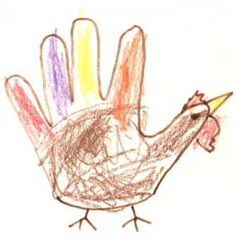

The Theme
The theme of the Thanksgiving Harvest Homebrew Competition is simple: Harvest Season and Thanksgiving. Any game or demo that has a turkey, cornucopia, thanksgiving holiday related food, autumn leaves, pilgrims, etc. in it would meet the theme.
Official Rules
The Thanksgiving Harvest Homebrew Competition is a means of providing the Nintendo DS homebrew community a platform for friendly competition around a common theme. Only Nintendo DS game or demos adhering to the theme will be considered. All games and demos entered must not contain any pre-existing game code or pre-existing demo code. Any entry is allowed to use universally available pre-existing non-game and non-demo code, such as the libraries libnds, pa_lib, libfat, and libwifi. All games and demos must not contain pre-existing content. Any entries submitted after November 20th, 2006 at midnight Greenwich Mean Time (GMT) will not be considered. Entries not adhering to the submission rules will not be considered.
Winners will be announced by November 23rd, 2006 by midnight GMT. Entries will be judged on creativity, adherence to the theme (festiveness), execution, and polish.
How to Submit
Email your submissions to compo [at] kraln (dot] com. Include your binary and a quick readme which should include a brief overview of what it is exactly that you are submitting.
Prizes
1st Prize: $50 USD
2nd Prize: $25 USD
3rd Prize: $15 USD
Participate
Give us a heads up if you are planning on participating with the Participation Poll.
Deadline
The deadline is November 20th, 2006 at midnight. Formally, this means November 21st, 2006 00:00 GMT (November 20th, 2006 24:00 GMT), not November 20th 00:00 GMT.
Winners
Congratulations to our winners.
1st Prize: Skate by Jimmy Phan
2nd Prize: Hunter or Hunted by Anthony Randazzo
3rd Prize: Happy Thanksgiving by Ryan FB
Wilcard: devkitPro by WinterMute
Skate
A clone of skate from WarioWare, Inc. but with a turkey skater. Very hard game, especially when some of the blocks come at you from the top and bottom at the same time and you can't dodge them and then there's the invisible blocks; those are tough to dodge. I couldn't get a score of 128 after 3 hours of play, so I guess that makes a ton of turkey dinners. Very cute turkey sprite.
Hunter or Hunted
Looks promising. Needs a bit more time to get the bugs out. Had trouble getting it to run on my gbamp. Worked on my sc lite sd. Very slow. The big map is too big. Very good use of the theme though. I could beat the game as a turkey, but not as the hunter. I spent around half an hour looking for some 99 turkeys in the big map, but could only find one. The small map didn't work for me at all.
Happy Thanksgiving
This was our only tech demo entry. It demonstrates the use of the console supplied by libnds by printing "Happy Thanksgiving!". How exciting! Happy Thanksgiving to you too.